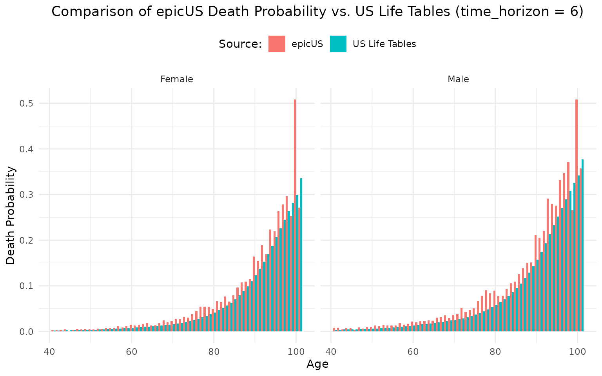

Reproducing_bgd.RmdIn this document, we aim to explore how the model behaves when COPD-related mortality is turned off. Specifically, our goal is to observe probability of death values that closely align with the background mortality rates from official U.S. sources. This is the expected behavior, as disabling exacerbation-related deaths causes the model to no longer predict mortality from exacerbations, which should result in values matching the background mortality rates.
To achieve this, we followed the series of steps below:
First, we set the intercept of the exacerbation equation to a high value, effectively disabling death from exacerbations in the model. This adjustment is made by changing the relevant variable as follows:
library(epicUS)
packageVersion("epicUS")
#> [1] '0.33.99999'
input<-get_input()
input$values$exacerbation$logit_p_death_by_sex <- cbind(
male = c(intercept = -13000, age = log(1.05), mild = 0, moderate = 0, severe = 7.4,
very_severe = 8, n_hist_severe_exac = 0),
female = c(intercept = -13000, age = log(1.05), mild = 0, moderate = 0, severe = 7.4,
very_severe = 8, n_hist_severe_exac = 0)
)
#also setting exlicit mortality = 0 so there is no correction made
input$values$manual$explicit_mortality_by_age_sex <- cbind(
male = c(rep(0, 111)),
female = c(rep(0, 111)))Longevity is another factor in the model that influences population. To ensure that no external factors impact the population, we set these parameters to 0. This adjustment can be made in the input.R file.
Initially we run the model for 1 year and get the events matrix. This matrix logs all the events that individuals go through thoughout the model. We will use this matrix to calculate death probabilities produced by epicUS
library(epicUS)
settings <- get_default_settings()
settings$record_mode <- 2
settings$n_base_agents <- 3.5e5
init_session(settings = settings)
#> Initializing the session
#> [1] 0
# input <- get_input()
# set time horizon as 1 initially
time_horizon <- 1
input$values$global_parameters$time_horizon <- time_horizon
run(input = input$values)
#> [1] 0
events <- as.data.frame(Cget_all_events_matrix())
terminate_session()
#> Terminating the session
#> [1] 0
# checking to make sure event 7 (death by exacerbation) is not included
# because we shut that off in the model
unique(events$event)
#> [1] 0 14 13 5 6 3 4
table(events$event)
#>
#> 0 3 4 5 6 13 14
#> 350001 8717 1419 26419 26045 9199 350001
library(dplyr)
library(tidyr)
# we will group by age so we convert ages into whole numbers.
events <- events %>%
mutate(age_and_local = floor(local_time + age_at_creation))
# Filter events to identify individuals who have experienced event 14,
# while also creating a flag for whether they ever experienced event 13 (death)
events_filtered<- events %>%
mutate(death= ifelse(event==13,1,0)) %>%
group_by(id) %>%
mutate(ever_death = sum(death)) %>%
filter(event==14) %>%
ungroup()
# calculationg probability of death
death_prob<- events_filtered %>%
group_by(age_and_local, female) %>%
summarise(
total_count = n(),
death_count = sum(ever_death==1),
death_probability = death_count / total_count
)We should not consider 40 year-olds beause (Amin said … )
print(head(death_prob, 15))
#> # A tibble: 15 × 5
#> # Groups: age_and_local [8]
#> age_and_local female total_count death_count death_probability
#> <dbl> <dbl> <int> <int> <dbl>
#> 1 40 0 13 13 1
#> 2 40 1 10 10 1
#> 3 41 0 4486 28 0.00624
#> 4 41 1 4625 9 0.00195
#> 5 42 0 4560 21 0.00461
#> 6 42 1 4415 12 0.00272
#> 7 43 0 4535 30 0.00662
#> 8 43 1 4523 20 0.00442
#> 9 44 0 4675 23 0.00492
#> 10 44 1 4642 6 0.00129
#> 11 45 0 4966 34 0.00685
#> 12 45 1 4871 10 0.00205
#> 13 46 0 5243 18 0.00343
#> 14 46 1 4995 14 0.00280
#> 15 47 0 4796 32 0.00667
print(tail(death_prob,15))
#> # A tibble: 15 × 5
#> # Groups: age_and_local [8]
#> age_and_local female total_count death_count death_probability
#> <dbl> <dbl> <int> <int> <dbl>
#> 1 94 1 351 56 0.160
#> 2 95 0 244 68 0.279
#> 3 95 1 278 75 0.270
#> 4 96 0 175 50 0.286
#> 5 96 1 191 51 0.267
#> 6 97 0 126 37 0.294
#> 7 97 1 139 31 0.223
#> 8 98 0 104 31 0.298
#> 9 98 1 99 30 0.303
#> 10 99 0 55 16 0.291
#> 11 99 1 72 31 0.431
#> 12 100 0 57 27 0.474
#> 13 100 1 50 27 0.54
#> 14 101 0 62 19 0.306
#> 15 101 1 62 17 0.274While these values are not perfectly aligned with our validation target, the variation is negligible.
Next, we want to ensure a consistent directional effect. We expect that increasing time_horizon to 5 years will bring the results closer to our target.
init_session(settings = settings)
#> Initializing the session
#> [1] 0
# set time horizon to 5
time_horizon <- 6
input$values$global_parameters$time_horizon <- time_horizon
run(input = input$values)
#> ERROR:ERR_EVENT_STACK_FULL
#> [1] -4
events5 <- as.data.frame(Cget_all_events_matrix())
terminate_session()
#> Terminating the session
#> [1] 0
table(events$event)
#>
#> 0 3 4 5 6 13 14
#> 350001 8717 1419 26419 26045 9199 350001
events5 <- events5 %>%
mutate(age_and_local = floor(local_time + age_at_creation))
events5 <- events5 %>%
mutate(local_time_adj = ceiling(events5$local_time))
# withing that year have they ever died?
events5_filtered<- events5 %>%
mutate(death= ifelse(event==13,1,0)) %>%
group_by(id,local_time_adj) %>%
mutate(ever_death = sum(death)) %>%
filter(event==14) %>%
ungroup()
death_prob5<- events5_filtered %>%
group_by(age_and_local, female, local_time_adj) %>%
summarise(
total_count = n(),
death_count = sum(ever_death==1),
death_probability = death_count / total_count
)
#> `summarise()` has grouped output by 'age_and_local', 'female'. You can override
#> using the `.groups` argument.Now, when we check the results. We see that the results are even further away:
print(head(death_prob5, 15))
#> # A tibble: 15 × 6
#> # Groups: age_and_local, female [7]
#> age_and_local female local_time_adj total_count death_count death_probability
#> <dbl> <dbl> <dbl> <int> <int> <dbl>
#> 1 40 0 1 12 12 1
#> 2 40 1 1 5 5 1
#> 3 41 0 1 25 25 1
#> 4 41 0 2 20 20 1
#> 5 41 1 1 14 14 1
#> 6 41 1 2 5 5 1
#> 7 42 0 1 24 24 1
#> 8 42 0 2 17 17 1
#> 9 42 0 3 20 20 1
#> 10 42 1 1 9 9 1
#> 11 42 1 2 13 13 1
#> 12 42 1 3 10 10 1
#> 13 43 0 1 25 25 1
#> 14 43 0 2 22 22 1
#> 15 43 0 3 25 25 1
print(tail(death_prob5,15))
#> # A tibble: 15 × 6
#> # Groups: age_and_local, female [7]
#> age_and_local female local_time_adj total_count death_count death_probability
#> <dbl> <dbl> <dbl> <int> <int> <dbl>
#> 1 103 1 4 11 11 1
#> 2 103 1 5 1 1 1
#> 3 103 1 6 7 3 0.429
#> 4 104 0 4 3 3 1
#> 5 104 0 5 2 2 1
#> 6 104 0 6 4 1 0.25
#> 7 104 1 4 2 2 1
#> 8 104 1 5 4 4 1
#> 9 104 1 6 3 1 0.333
#> 10 105 0 5 2 2 1
#> 11 105 0 6 5 4 0.8
#> 12 105 1 5 2 2 1
#> 13 105 1 6 7 5 0.714
#> 14 106 0 6 3 0 0
#> 15 106 1 6 3 1 0.333To better understand the differences, we visualize the results and compare them against the target values.
death_prob_clean <- death_prob %>%
ungroup() %>%
select(age_and_local, female, death_probability) %>%
pivot_wider(names_from = female, values_from = death_probability, names_prefix = "sex_")
colnames(death_prob_clean) <- c("Age", "Male", "Female")
USlifetables_num <- input$values$agent$p_bgd_by_sex
USlifetables_df <- data.frame(
Age = 1:nrow(USlifetables_num), # Start age from 1
Male = USlifetables_num[, 1],
Female = USlifetables_num[, 2]
)
common_ages <- intersect(death_prob_clean$Age, USlifetables_df$Age)
# filter both so only include the rows with matching Age
death_prob_filtered <- death_prob_clean[death_prob_clean$Age %in% common_ages, ]
USlifetables_filtered <- USlifetables_df[USlifetables_df$Age %in% common_ages, ]
library(ggplot2)
library(dplyr)
combined_data_long <- bind_rows(
death_prob_filtered %>% mutate(Source = "epicUS"),
USlifetables_filtered %>% mutate(Source = "US Life Tables")
) %>%
pivot_longer(cols = c("Male", "Female"), names_to = "Sex", values_to = "Death_Probability") %>%
filter(Age > 40)
ggplot(combined_data_long, aes(x = Age, y = Death_Probability, fill = Source)) +
geom_col(position = "dodge", width = 1) +
facet_wrap(~Sex) +
labs(
title = "Comparison of epicUS Death Probability vs. US Life Tables (time_horizon =1)",
x = "Age",
y = "Death Probability",
fill = "Source:"
) +
theme_minimal()+
theme(
legend.position = "top",
legend.justification = "center",
plot.title = element_text(hjust = 0.5, margin = margin(b = 10))
)When time_horizon = 6, we get the following plot.
library(ggplot2)
library(tidyr)
library(dplyr)
combined_data_long5 <- bind_rows(
death_prob5_filtered %>% mutate(Source = "epicUS"),
USlifetables_filtered %>% mutate(Source = "US Life Tables")
) %>%
pivot_longer(cols = c("Male", "Female"), names_to = "Sex", values_to = "Death_Probability") %>%
filter(Age > 40)
final_EPIC_death5<- filter(combined_data_long5, Source == "epicUS")
final_US_death<- filter(combined_data_long5, Source == "US Life Tables")
# Add Death_Probability to USlifetables_filtered
USlifetables_filtered_long <- USlifetables_filtered %>%
gather(key = "Sex", value = "Death_Probability", Male, Female)
# Loop through each unique year in the combined_data_long dataset
for (year in unique(combined_data_long5$Year)) {
# Filter the data for the current year
year_data <- combined_data_long5 %>% filter(Year == year)
# Create the plot for the current year
p <- ggplot(combined_data_long, aes(x = Age, y = Death_Probability, fill = Source)) +
geom_col(position = "dodge", width = 1) +
facet_wrap(~Sex) +
labs(
title = "Comparison of epicUS Death Probability vs. US Life Tables (time_horizon = 6)",
x = "Age",
y = "Death Probability",
fill = "Source:"
) +
theme_minimal()+
theme(
legend.position = "top",
legend.justification = "center",
plot.title = element_text(hjust = 0.5, margin = margin(b = 10))
)
# Print the plot for the current year
# print(p)
}
print(p) When we break it down and analyze per year, it seems to be in line with what we expect.
We have identified a potential source of the observed mortality discrepancies. Specifically, the mortality ratio associated with both former and current smokers appears to be influencing the results.
To investigate this, we set the following smoking-related mortality factors to 1 (indicating no excess mortality risk for former and current smokers):
After making this adjustment, the results align more closely with the life tables.
input$values$smoking$mortality_factor_former<- c(age40to49=1,age50to59=1,
age60to69=1,age70to79=1,
age80p=1)
input$values$smoking$mortality_factor_current<- c(age40to49=1,age50to59=1,
age60to69=1,age70to79=1,
age80p=1)#> Initializing the session
#> [1] 0
#> [1] 0
#> Terminating the session
#> [1] 0
#> `summarise()` has grouped output by 'age_and_local'. You can override using the
#> `.groups` argument.logit_p_never_smoker_con_not_current_0_betas
Currently the model has too many former smokers. This can be adjusted
by increased the intercept of
logit_p_never_smoker_con_not_current_0_betas. So
first,instead of changing the mortality factors, we keep the mortality
factors for current and former smokers the same.
settings <- get_default_settings()
settings$record_mode <- 2
settings$n_base_agents <- 1e6
init_session(settings = settings)
#> Initializing the session
#> [1] 0
input<-get_input()
time_horizon <- 1
input$values$global_parameters$time_horizon <- time_horizon
# kept the same
input$values$smoking$mortality_factor_current <- t(as.matrix(c(age40to49 = 1,
age50to59 = 1,
age60to69 = 1.94,
age70to79 = 1.86,
age80p = 1.66 )))
# kept the same
input$values$smoking$mortality_factor_former<- t(as.matrix(c(age40to49 = 1,
age50to59 = 1,
age60to69 = 1.54,
age70to79 = 1.36,
age80p = 1.27 )))Then, we adjust the intercept to ensure that the ratio of never-smokers to the total population is approximately 0.21. We modify the intercept accordingly to achieve this target.
# Probability of being a never-smoker conditional on not being current smoker,
# at the time of creation
input$values$smoking$logit_p_never_smoker_con_not_current_0_betas <-
t(as.matrix(c(intercept = 4.85, sex = 0, age = -0.06, age2 = 0,
sex_age = 0,sex_age2 = 0, year = -0.02)))
run(input = input$values)
#> [1] 0
events <- as.data.frame(Cget_all_events_matrix())
terminate_session()
#> Terminating the session
#> [1] 0
# checking the ratio
output<-Cget_output_ex()
smoking_num<-output$n_smoking_status_by_ctime
never_smoker_ratio <- smoking_num[1, 3] / sum(smoking_num[1, ])
never_smoker_ratio
#> [1] 0.2111578Now we can visualize the change:
#> `summarise()` has grouped output by 'age_and_local'. You can override using the
#> `.groups` argument.